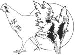

Dr. N.W. Walker (D. Sc., Ph.D.) claims that you can use sorghum seeds to get ...
Some years ago, while doing research on the properties of sorghum seed, I discovered that a genetic female hormone was quite prevalent in these small, glossy kernels.
I had a feeling that this sorghum hormone could, perhaps, influence the percentage of female birds hatched, and-to check this "hunch"I set up an experiment using zebra finches ... which (because they regularly hatch up to four eggs a month) seemed the best choice available to me.
Before I began the research, these birds had hatched out a predictable half-and-half mixture of male and female finches.
I decided to keep a full dish of sorghum seeds in the aviary at all times and watch for developments.
At first the birds didn't show much interest in the new food, but-in the course of three or four weeks-they began to feed on the sorghum before moving on to their regular feeders ... and they followed this pattern both morning and evening. Then, after two or three months, I began to notice an increase In the number of female birds hatched.
In fact, by the end of the first year of sorghum-supplemented feeding, my finches produced close to four female birds for every male hatched! Unfortunately, other (and, at the moment, more important) matters interrupted my experiments before I could take the time to See if my "discovery" held true for larger birds, too.
I do hope to continue this research-as soon as time allows-with Marsh's Pharaoh Coturnix Quail, because these birds are about the most prolific larger fowl that I've come across. Quail eggs hatch within 16 days, and the chicks actually begin laying eggs themselves by five or six weeks after hatching. Obviously, these qualities would help the experiments proceed quickly.
In the meantime, however, I'm glad to pass this little bit of information along to anyone who has a few chickens, geese, etc. and who would be interested in seeing if sorghum seed will increase the percentage of female chicks produced by these more practical barnyard fowls.
I can assure you that I've found nothing in sorghum that was not definitely beneficial to the health of any birds fed on this seed.
And, in exchange for this little tip, I'd appreciate it if any of you poultry-raising MOTHER readers who try this experiment with your own birds would drop me a line ... just to let me know what results (if any) you might have. Just address any such information to Dr. N.W. Walker, P.O. Box 13206, Phoenix, Arizona 85002.
|
 |
|
|